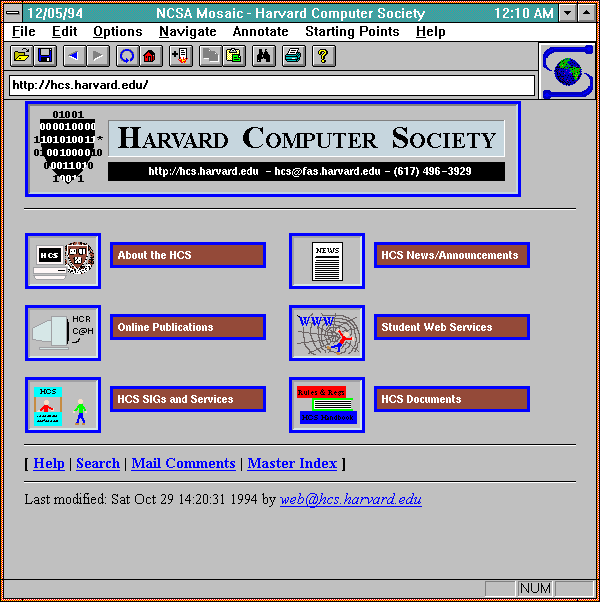

Bildfilformat
Rastergrafik
Vektorgrafik
jpg
Vad står förkortningen för?
Joint Photographic Experts Group
Vad innebär formatet?
Att du kan bästemma hur mycket det ska komprimeras
Fördelar/nackdelar?
Den har ej transparans men den tar då mindre plats
Främsta användningsområdet?
Att förvara foton
exempel!

gif
Vad står förkortningen för?
Grafics Interchange Format
Vad innebär formatet?
Det är en bitmat där varenda pixel kan ha 256 olika värden och varända är en specifierad färg.
Fördelar/nackdelar?
Låg bild kvalaitet. Men tar lite plats och kan vara animerad
Främsta användningsområdet?
Animerade bilder och bilder med få rärger
exempel!
png
Vad står förkortningen för?
Portable Network Grafics
Vad innebär formatet?
Att du kan också förvara transparans och samt bästämma komretions nivå
Fördelar/nackdelar?
Du kan ha transparans i bilderna men de tar då lite mer plats
Främsta användningsområdet?
saker som loggor som kan behöva ha transparans eller GUI komponenter som behöver transparans
exempel!
wmf
Vad står förkortningen för?
Windows Meta File
Vad innebär formatet?
Det är ett format som inehåller matematiska funktioner som definearr hur det serut
Fördelar/nackdelar?
Det gör att du kan få hög resulution även om du zommar in. Du kan också ändre inehållet änkelt senare. Men att få mycket detalj är svåare då du inte bara kan ta in pixeldata från en bild
Främsta användningsområdet?
Andvändbarf för bildär där du ska kunna förstor och förminska dem mycket tan att det ska se pixligt ut
exempel!
svg
Vad står förkortningen för?
Scalabe Vector Grafics
Vad innebär formatet?
Den förvarar då matematiska funktioner som definirar hur det ser ut fast i et XML format. Den är också animerbar
Fördelar/nackdelar?
Den är definerad i xml vilket gör den änklare att arbeta med med kåd. Samt är de W3C rekomendation och kan animeres. Dock kan filstorleken bli stor
Främsta användningsområdet?
Samma som för wmf men kan också andvendas för enklare animationer samt på websidor då det är W3C rekomendation
exempel!